AgentAssemble assembles articulated 3D assets from separate parts and refines its assembly procedure and geometric helpers from the feedback of repeated rollouts.
Contributions
A self-improving assembly agent
Two nested loops let the agent's Skill, its procedure and helper scripts, improve from its own rollouts without any human edit.
Kinematic evaluation with diagnostics
A GT-based Evaluator scores every URDF by its motion, invariant to naming, axis sign, and offset placement, and returns a record per joint.
The ArtiAssembly benchmark
300 articulated objects with ground-truth URDFs and sanitized part meshes, together with a lightweight engine on which many agents assemble in parallel.
Abstract
Articulated 3D assets, doors, drawers, faucets, appliances, are essential ingredients for physical simulation, embodied AI training, and interactive content, yet authoring them remains expensive, because every part must be placed at the right pose and scale and every joint must be given the right pivot and axis. Feed-forward models are trained on a fixed set of categories and struggle with out-of-distribution objects, and procedural scripts must be written by hand for every new category. LLM agents that operate 3D tools generalize further, but they follow a procedure that a human writes once, so the same mistakes recur on every object.
We instead let this procedure, the agent's Skill, improve from its own experience. An LLM-driven agent is given separate part meshes, a reference image, and a kinematic template, and must produce a valid description file. We present AgentAssemble, a self-improvement framework with two nested loops. In the inner Runtime Assembly Loop, an Executor agent assembles the parts under the current Skill, while a Runtime Validator script checks intermediate results without ground truth. In the outer Self-Improvement Loop, a GT-based Evaluator script scores each predicted URDF kinematically, invariant to naming, axis sign, and offset placement, and a Skill Evolver agent rewrites the Skill, including its checks and helper tools, from the resulting diagnostics. Both loops run on a lightweight, agent-native simulation and rendering engine on which many agents assemble in parallel.
We also introduce ArtiAssembly, a benchmark of 300 articulated objects with ground-truth URDFs and sanitized part meshes. Experiments show that, through self-improvement alone and without any human edit, AgentAssemble raises the fitness on objects of held-out categories from 0.474 to 0.681, and that the improved Skill transfers to other Executor models.
Two nested loops around one evolving Skill
The Skill is a directory with a Markdown procedure, deterministic helper scripts, and the contract of the runtime. It is the only component that changes between rounds. The backbone LLM, the simulation runtime, and the evaluation stay frozen.
The Runtime Assembly Loop runs once per object. The Self-Improvement Loop runs once per round over a batch of training objects and returns a revised Skill.
Runtime Assembly Loop
The Executor works through one tool, a persistent Python session with a frozen Assembly SDK. It imports the parts, authors links and joints, drives every joint through its range, renders the result, and revises the assembly from the checks of the Runtime Validator, a script that runs without ground truth.
Kinematic evaluation
The same mechanism has many URDF encodings. The GT-based Evaluator matches links by geometry and compares the motion of the predicted and the ground-truth URDF. It returns a pass predicate, a graded fitness, and per-joint diagnostics.
Two-layer regression strategy
The Skill Evolver first tests each edit on three train objects of the failure cluster that the edit addresses. The candidate Skill must then exceed the current champion on a separate validation split by 1.5 standard errors, with three sessions per object.
How assemblies are scored
predicted and ground-truth URDFcanonicalize axis sign, limits, originsmatch links by mesh geometry12 scored checks4 structural, 5 articulation, 3 geometricpass predicate, fitness, per-joint record
ground truth
The door is at its joint limit. In the other cells the ground-truth door is overlaid in blue.
correct prediction
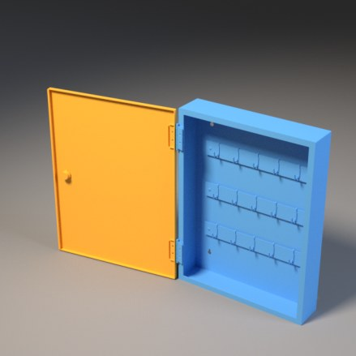
✓axis0°
✓pivot0.0 cm
✓rest pose0.1 τ
✓motion0.1 τ
fitness 0.99pass, 12/12 checks
axis tilted by 20°
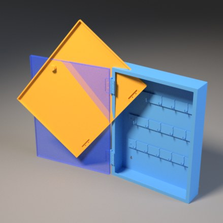
✕axis20°
–pivotn/a
✓rest pose0.1 τ
✕motion6.8 τ
fitness 0.00fail, 9/12 checks
pivot off by 10 cm
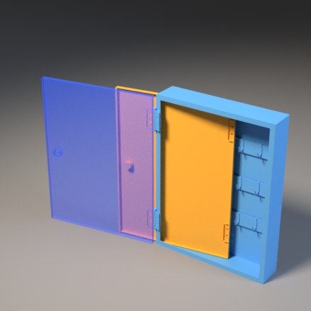
✓axis0°
✕pivot10.0 cm
✓rest pose0.1 τ
✕motion9.2 τ
fitness 0.00fail, 10/12 checks
pivot off by 2.5 cm
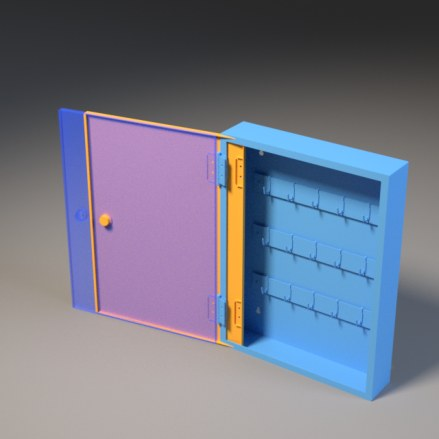
✓axis0°
✕pivot2.5 cm
✓rest pose0.1 τ
✕motion2.3 τ
fitness 0.12fail, 10/12 checks
part 20% too large
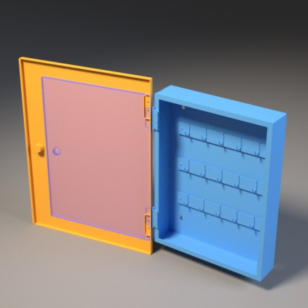
✓axis0°
✓pivot0.0 cm
✕rest pose3.4 τ
✕motion3.4 τ
fitness 0.00fail, 10/12 checks
A single-door cabinet under a correct prediction and four perturbations of the hinge. Each perturbation trips the dimension it targets, and the per-joint record tells the Skill Evolver what went wrong.
Fitness on held-out objects rises from 0.474 to 0.681
The run starts from a seed Skill S0 that states only the input, the output, and the SDK. It lasts twelve rounds with gpt-6.1-sol as the backbone of both agents and receives no human edit. The validation gate accepted three of the nine edited candidates, S3, S6, and S9, each by a paired gain of 0.06 to 0.09 fitness. On the 40 held-out test objects, S9 raises the Pass Rate from 30.0% to 52.5%.
Fitness over the rounds
Edit and gate decision of every roundacceptedrejected
S1no edit survived the trials of the Evolver
S2cavity-mouth detection for hollow parts-0.002
S3render-to-reference image comparison+0.089
S4pivot axes from rotational evidence-0.013
S5parent-first sync of joint frames+0.001
S6attachment depth from parent geometry+0.061
S7part scale from distal landmarks-0.019
S8hinge angle from image edges+0.012
S9circular rims as bearing-axis evidence+0.086
S10no edit survived the trials of the Evolver
S11numerical check of motion sign-0.016
Δ validation fitness against the current Skill
Self-improvement of the Skill. The left panel shows the fitness on the train and test splits. The right panel lists the edit that the Skill Evolver proposed in every round with the paired change in validation fitness and the decision of the gate.
What the Skill Evolver wrote
S3
Root-registered rest-pose check
A helper segments the render and the reference image by link color, registers them on the fixed root link, and reports the offset of every link. A displaced link of the right size points to a misplaced pivot.
S6
Depth from the parent geometry
An image offset fixes two of the three coordinates of a pivot. The Skill takes the third from the attachment geometry of the parent, such as a bearing, a hinge edge, or a socket.
S9
Bearings from circular rims
A helper extracts closed circular edge loops from the meshes. Matching the rims of a child with those of its parent constrains the rotation of the part and the joint axis.
Qualitative results
Ground truth
Particulate
USDCraft
S0 seed
S3
S6
S9 best
Tape measure
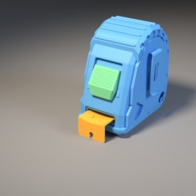
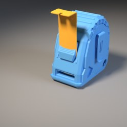
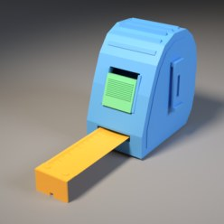
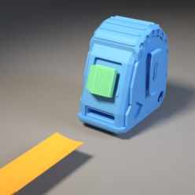
0.24
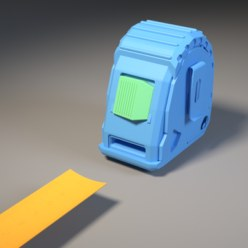
0.23
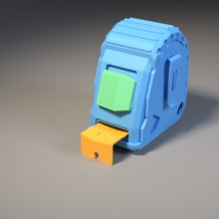
0.70
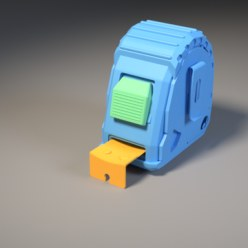
0.95
Cash register
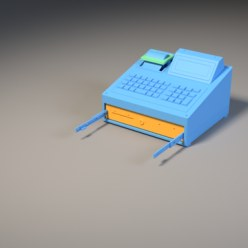
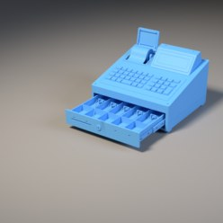
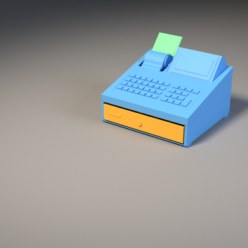
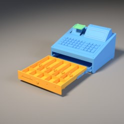
0.02
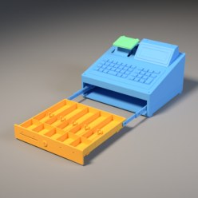
0.07
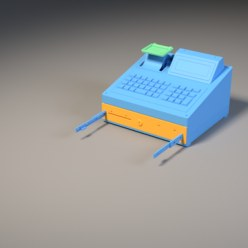
0.55
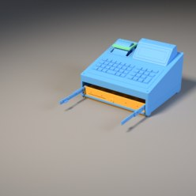
0.91
Microscope
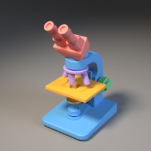
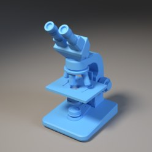
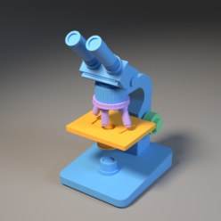
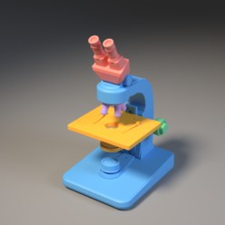
0.48
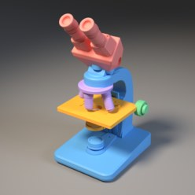
0.49
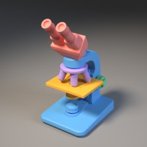
0.77
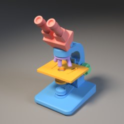
0.92
Computer desk
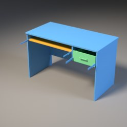
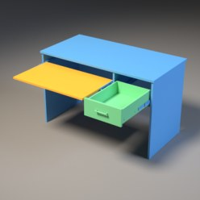
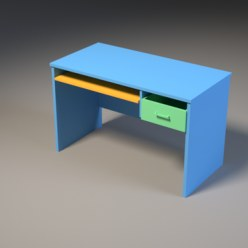
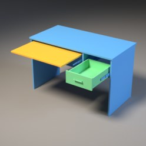
0.00
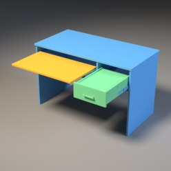
0.00
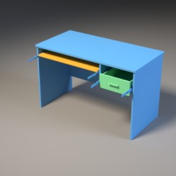
0.61
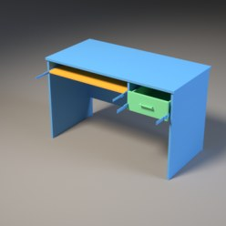
0.91
Two existing methods, the seed Skill, and the accepted Skills on four test objects. The number in each cell is the fitness of the session.
Transfer across Executor models
The Skills were obtained with gpt-6.1-sol only. Run unchanged with three other Executor models, S9 improves over the seed Skill by 0.165 to 0.256 fitness under every model.
Executor model
Fitness S0
Fitness S9
Pass Rate S0 (%)
Pass Rate S9 (%)
Paired fitness gain
gpt-6.1-sol
0.474
0.681
30.0
52.5
+0.207 ± 0.041
claude-opus-5-5
0.387
0.552
18.3
33.3
+0.165 ± 0.034
gpt-6.1-terra
0.316
0.572
18.3
39.2
+0.256 ± 0.039
gpt-6-astra
0.568
0.814
43.3
71.7
+0.246 ± 0.049
Test split, 40 objects with three sessions each. The gain is the mean per-object difference with its standard error.
Comparison with existing methods
Particulate and USDCraft take the assembled mesh as input and predict the part segmentation and the kinematic tree themselves, whereas our Executor receives the separated parts at scrambled pose and scale together with the template. The inputs therefore differ, and the comparison serves as a reference on the same objects.
Method
Model
Joints
Axis
Pivot
Motion
Objects
Particulate
–
19.2
30.4
18.7
20.0
22.5
USDCraft
astra
83.2
84.0
81.3
83.2
75.0
Ours, S0
sol
76.0
91.5
77.3
78.1
62.5
Ours, S9
sol
89.1
93.9
87.5
89.9
85.8
Ours, S0
astra
81.6
94.4
82.8
83.5
70.0
Ours, S9
astra
93.6
96.5
94.1
94.1
92.5
Share of correct joints and of objects with all joints correct on the 40 test objects, in percent. Axis, Pivot, and Motion count the joints that are correct in that respect.
Ablation
Skill
Fitness
Pass Rate (%)
Gain over S0
Seed Skill S0
0.474
30.0
–
Human-curated Skill
0.541
37.5
+0.067 ± 0.024
Without regression strategy
0.475
30.0
+0.001 ± 0.032
Without diagnostics
0.609
47.5
+0.135 ± 0.030
Full method (S9)
0.681
52.5
+0.207 ± 0.041
Test split with gpt-6.1-sol. Without the regression strategy every edit is kept, and the Skill of round 9 falls back to the level of the seed.
ArtiAssembly, 300 articulated objects with exact ground truth
ArtiAssembly holds 300 articulated everyday objects in four tiers of complexity, and every object belongs to its own category across 26 domains. For each object the geometry is merged into one mesh per link, every semantic name and material is replaced with a neutral index and a flat color, every non-root mesh is rotated and rescaled at random, and the joint origins, joint axes, link orientations, and link scales are blanked in the URDF template that the agent must fill.
300 objects1,723 links1,400 movable joints26 domains4 tiers of complexity
Generated objectnamed links, each merged from its parts
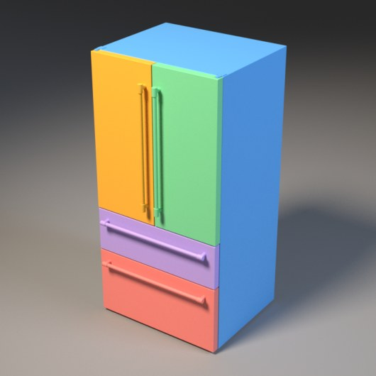
cabinet 13 parts
left_door 2 parts
right_door 2 parts
upper_freezer_drawer 3 parts
lower_freezer_drawer 3 parts
Sanitized partsone mesh per link in its own frame, with a neutral name
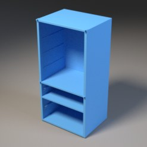
link_0
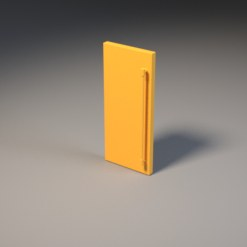
link_1
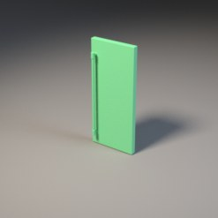
link_2
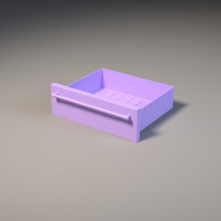
link_3
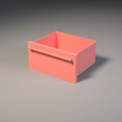
link_4
random rotation about the pivot, longest side rescaled to one
One instance of ArtiAssembly, from the generated object to the task that the agent receives.
Dataset
Objects
Categories
Format
PartNet-Mobility
2346
46
URDF
ArtVIP
992
37
USD
Lightwheel
259
14
USD
ArtiAssembly
300
300
URDF
ArtiAssembly also defines complexity tiers and releases the parametric source code of the geometry.
Objects by number of movable joints
The 300 objects by number of movable joints, split by tier.
BibTeX
@article{agentassemble2026,
title = {AgentAssemble: Self-Improving Agents for Articulated 3D Asset Assembly},
author = {Author names to be added},
journal = {arXiv preprint},
year = {2026}
}